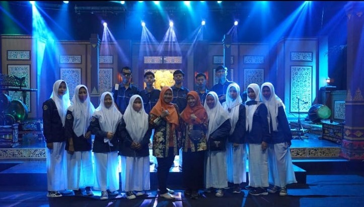
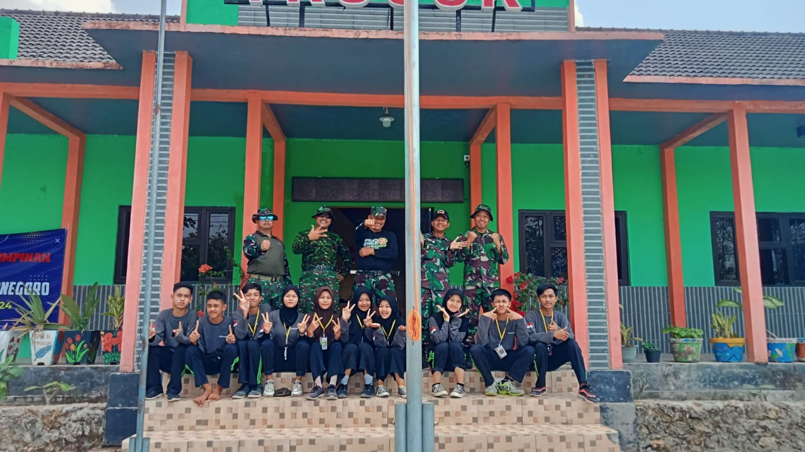
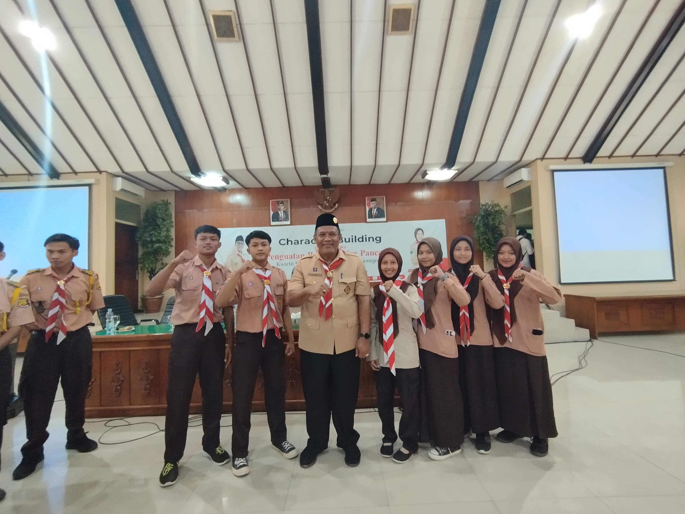

Tentang Saya
Hai, aku Hidayatul Mustafida. Sekarang aku lagi kuliah di Prodi Teknik Informatika. Sehari-hari aku sibuk belajar tentang dunia teknologi, coding, dan hal-hal seru lainnya di dunia IT. Tapi, meskipun aku berkutat sama komputer dan program, aku punya impian yang mungkin sedikit beda. Aku ingin jadi seorang guru. Buat aku, jadi guru itu keren banget — bisa berbagi ilmu, membantu orang lain tumbuh, dan ikut membentuk masa depan.Harapannya,suatu saat nanti aku bisa menggabungkan ilmu teknologi yang aku pelajari dengan dunia pendidikan, biar bisa ngajarin dengan cara yang lebih seru, kreatif, dan pastinya nggak ngebosenin. Senang bisa berbagi cerita ini. Do'ain ya guys aku bisa jadi guru yang diridhoi Allah, aamiin. Yuk, bareng-bareng kita wujudkan mimpi! 🚀.
Portofolio
| No | Nama Kegiatan | Waktu Kegiatan | Bukti Kegiatan |
|---|---|---|---|
| 1. | Industri di TVRI Yogyakarta | Februari 2023 |  |
| 2. | Panitia LDKS di SMK | Oktober 2023 |  |
| 3. | Kegiatan seminar Pramuka | Februari 2024 |  |
Opini

Generasi Emas Terancam: Jebakan Manis Era Digital terhadap Dunia Pendidikan.
Mewujudkan Indonesia Berkemajuan Melalui Teknologi dan Kecerdasan Buatan.

Media Sosial dalam Pembentukan Opini Publik di Era Digital.
Prospek Kerja Lulusan Teknik Informatika Paling Bergengsi
Transformasi Digital sebagai Kunci Meningkatkan Daya Saing Bangsa di Era Globalisasi.
Hubungi Saya
maps